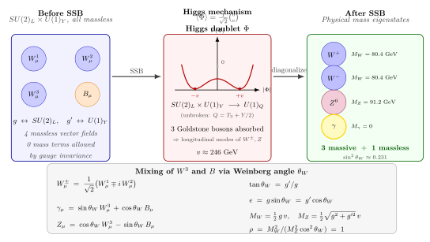

SU(2) × U(1) — 弱电统一是怎么"接上"的?
上一节我们花了整节把一件事说清楚: 若要求 Dirac 场对局部 $U(1)$ 相位变换 $\psi \to e^{i\alpha(x)}\psi$ 不变, 就必须引入一个带规范变换的矢量场 $A_\mu$, 它的动力学严格地就是 Maxwell 方程. 换句话说, 电磁学不是一个"独立的"理论, 它是 $U(1)$ 规范对称的自动推论. 这件事一旦想通, 下一个自然的问题就紧跟着来了: 弱相互作用能不能也用同样的逻辑"长"出来?
这个问题一开始并不显得好答. 电磁力是长程的、无质量光子传递的; 弱相互作用却是彻头彻尾的短程力, 自由中子衰变 $n\to p\,e^-\bar\nu_e$ 有 $880\,\mathrm{s}$ 的寿命, β 衰变的作用距离不到 $10^{-17}\,\mathrm{m}$. Fermi 在 1934 年写下的那条经典公式, 是四个费米子在时空一点直接耦合的"接触相互作用", 它有一个出名的耦合常数 $G_F \approx 1.166 \times 10^{-5}\,\mathrm{GeV}^{-2}$. 那个 $\mathrm{GeV}^{-2}$ 的量纲马上就告诉你一件坏事: 这个理论在高能一定爆炸 — 任何树图截面按量纲分析都正比于 $G_F^2 s$, 在 $\sqrt s \sim 1/\sqrt{G_F} \approx 300\,\mathrm{GeV}$ 附近, 就会超过幺正性允许的上限. 也就是说, Fermi 四费米子理论在高能非可重整化, 它肯定不是故事的终点.
修补的方向物理学家早就猜到了: 把"接触相互作用" 拆开成两个顶点之间夹一个重的中间玻色子 — 当动量转移 $q^2 \ll M_W^2$ 时传播子 $1/(q^2 - M_W^2) \approx -1/M_W^2$ 变成常数, 自动还原 Fermi 的"接触" 样子; 当 $q^2 \gtrsim M_W^2$ 时传播子压低了振幅, 高能发散被治住了. 代入 $G_F/\sqrt 2 = g^2/(8 M_W^2)$, 若 $g$ 是 O(1) 量级的耦合, 立刻估出 $M_W \sim 100\,\mathrm{GeV}$ — 这在 1960 年代看上去像个科幻数字, 但它正是 1983 年 UA1 探测器屏幕上出现的那个.
真正的难点不在"加一个重玻色子", 而在怎么让这个玻色子与光子住在同一个规范结构里. 本节要一步步把这件事推清楚.
一、弱同位旋 SU(2)L 与弱超荷 U(1)Y: 左手双重态的群论
Glashow 在 1961 年提出了一个关键的猜想: 弱相互作用的规范群不是光子那个 $U(1)$ 的简单扩张, 它必须是 $SU(2)_L \times U(1)_Y$ — 一个直和群. 下标 $L$ 代表这个 $SU(2)$ 只作用在左手费米子上; 下标 $Y$ 称为"弱超荷", 是一个新量子数, 它与电荷 $Q$ 和弱同位旋第三分量 $T_3$ 的关系由 Gell-Mann-Nishijima 公式给出:
$$ Q \;=\; T_3 \;+\; \frac{Y}{2}. \tag{1} $$
为什么必须只作用在"左手"费米子上? 这是实验硬塞给理论家的条件. Wu 1956 年用极化 $^{60}$Co 的 β 衰变证实宇称破缺, 紧接着 Goldhaber 1958 测出中微子是完完全全左手的, 没有任何右手分量现身. 这种"极致手征" 不是理论家选的, 它是自然选的; 要把这种极致手征嵌进一个自洽的规范结构, 唯一的办法是让规范群只作用在一边. 于是左手费米子组成 $SU(2)_L$ 的双重态, 右手费米子则是 $SU(2)_L$ 的单重态. 以电子代为例:
$$ L_L = \begin{pmatrix}\nu_{eL}\\ e_L\end{pmatrix},\quad Y_L = -1; \qquad e_R,\quad Y_R = -2. $$
代入 (1): 中微子的电荷 $Q = +1/2 + (-1)/2 = 0$, 电子左手分量 $Q = -1/2 + (-1)/2 = -1$, 右手电子 $Q = 0 + (-2)/2 = -1$. 左右电荷必须相等 (否则单粒子电子的电荷不守恒), 这是 $Y_L$ 与 $Y_R$ 取值的约束, 不是输入.
规范化这两个对称后, $SU(2)_L$ 给出三个规范场 $W^1_\mu, W^2_\mu, W^3_\mu$ (李代数 $\mathfrak{su}(2)$ 是三维), $U(1)_Y$ 给出一个 $B_\mu$, 一共四个无质量矢量玻色子. 耦合常数分别记作 $g$ (对应 $SU(2)_L$) 与 $g'$ (对应 $U(1)_Y$). 此时整条规范 Lagrangian 没有任何质量项 — 规范不变性禁止. 但实验上弱相互作用短程, 规范玻色子必须有质量, 且只能有三个 (带电的 $W^\pm$ 与中性的 $Z$), 还剩一个要当无质量的光子 $\gamma$. 四个变三个有质量一个无质量, 这正是 Higgs 机制要干的活.
二、γ 与 Z 的混合: W3-B 质量矩阵的严格对角化
这是本节要严格推的那个 cliché. 大多数教科书会告诉你 $\gamma = \sin\theta_W W^3 + \cos\theta_W B$, $Z = \cos\theta_W W^3 - \sin\theta_W B$, 然后就去讨论别的东西了. 但这个混合是哪里来的? 为什么恰好是这个线性组合? 为什么光子无质量是自动的而不是人工设定? 下面我们一步一步把它算出来.
Higgs 场是一个 $SU(2)_L$ 双重态, 带弱超荷 $Y = +1$:
$$ \Phi = \begin{pmatrix}\phi^+\\ \phi^0\end{pmatrix}. $$
Mexican-hat 势 $V(\Phi) = -\mu^2 \Phi^\dagger\Phi + \lambda(\Phi^\dagger\Phi)^2$ 在 $|\Phi|^2 = v^2/2$ 取最小 ($v = \mu/\sqrt\lambda$), 选择真空为
$$ \langle\Phi\rangle = \frac{1}{\sqrt 2}\begin{pmatrix}0\\ v\end{pmatrix}. $$
关键是读 Higgs 的协变导数 $D_\mu\Phi = \big(\partial_\mu - i g\,T^a W^a_\mu - i g'\,\tfrac{Y}{2}\,B_\mu\big)\Phi$, 其中 $T^a = \tau^a/2$ 是 Pauli 矩阵的一半. 规范玻色子的质量项来自 $|D_\mu\Phi|^2$ 在真空 $\langle\Phi\rangle$ 上展开得到的二次项. 我们把导数作用在真空上:
$$ D_\mu\langle\Phi\rangle = -\frac{i}{\sqrt 2}\bigg(g\,\frac{\tau^a}{2}W^a_\mu + g'\,\frac{1}{2}B_\mu\bigg)\begin{pmatrix}0\\ v\end{pmatrix}. $$
展开 $\tau^a W^a_\mu$ 矩阵:
$$ \frac{g}{2}\begin{pmatrix}W^3_\mu & W^1_\mu - iW^2_\mu \\ W^1_\mu + iW^2_\mu & -W^3_\mu\end{pmatrix} + \frac{g'}{2}\begin{pmatrix}B_\mu & 0\\ 0 & B_\mu\end{pmatrix}. $$
作用在 $\begin{pmatrix}0\\ v\end{pmatrix}$ 上, 再取 $|\cdot|^2$ 并只保留玻色子平方项 (省略整体 $1/8$):
$$ \mathcal L_m \;=\; \frac{v^2}{8}\Big[g^2\big((W^1)^2 + (W^2)^2\big) + \big(-g W^3_\mu + g' B_\mu\big)^2\Big]. $$
前两项立刻给出 $W^1, W^2$ 的对称质量 $m_W^2 = g^2 v^2/4$; 定义带电玻色子 $W^\pm_\mu = (W^1_\mu \mp i W^2_\mu)/\sqrt 2$, 它们吃掉两个 Goldstone 模变成带质量矢量场, 质量与上面一致. 剩下的是中性部分:
$$ \mathcal L_m^{\text{neutral}} \;=\; \frac{v^2}{8}\big(-g W^3_\mu + g' B_\mu\big)^2 \;=\; \frac{v^2}{8}\begin{pmatrix}W^3_\mu & B_\mu\end{pmatrix}\begin{pmatrix}g^2 & -g g'\\ -g g' & g'^2\end{pmatrix}\begin{pmatrix}W^{3\mu}\\ B^\mu\end{pmatrix}. $$
这就是中性场的 $2\times 2$ 质量矩阵. 对角化它. 求行列式: $\det = g^2 g'^2 - (-g g')^2 = 0$. 零! 这是一个严格结构性的结果 — 因为矩阵可以写成外积 $(g, -g')(g, -g')^T$, 它秩为 1. 零行列式意味着存在一个质量为零的本征模式. 求迹 $\mathrm{tr} = g^2 + g'^2$, 另一个本征值就是 $g^2 + g'^2$. 于是两个本征值是:
$$ m_\gamma^2 = 0, \qquad m_Z^2 = \frac{v^2}{4}(g^2 + g'^2). \tag{2} $$
本征矢量用正交化直接写出. 零本征值对应的方向要满足 $g^2 x - g g' y = 0$ 且 $-g g' x + g'^2 y = 0$, 都给出 $x/y = g'/g$, 归一化:
$$ A_\mu = \frac{g' W^3_\mu + g B_\mu}{\sqrt{g^2 + g'^2}}, \qquad Z_\mu = \frac{g W^3_\mu - g' B_\mu}{\sqrt{g^2 + g'^2}}. $$
定义 Weinberg 角 $\tan\theta_W \equiv g'/g$, 立刻得到漂亮的教科书形式
$$ A_\mu = \sin\theta_W\, W^3_\mu + \cos\theta_W\, B_\mu, \qquad Z_\mu = \cos\theta_W\, W^3_\mu - \sin\theta_W\, B_\mu. $$
这就是光子 $A$ 与 Z 玻色子 $Z$ 作为 $W^3$ 与 $B$ 的混合出来的来历. 重要的是反思一下 为什么 $A_\mu$ 无质量. 不是我们要求它无质量然后凑系数, 而是 Higgs 真空 $\langle\Phi\rangle = (0, v/\sqrt 2)^T$ 在某个 $SU(2)_L \times U(1)_Y$ 的子群作用下不变. 具体验证: 电荷算符 $Q = T_3 + Y/2$ 作用在 $\langle\Phi\rangle$ 上, $T_3$ 对下分量给 $-1/2$, $Y/2$ 给 $+1/2$, 加起来是 $0$. 于是 $e^{i\alpha Q}\langle\Phi\rangle = \langle\Phi\rangle$, 真空对 $U(1)_Q \subset SU(2)_L \times U(1)_Y$ 的对角子群保持不变. Goldstone 定理反过来说: 没破缺的生成元对应的规范场就还无质量. $U(1)_Q$ 就是电磁规范对称, 它对应的规范场就是光子. 光子无质量不是巧合, 是"未破缺子群"的生成元给出来的. 这是 Higgs 机制最深刻也最容易被忽略的一点: 它破缺的是 $SU(2)_L \times U(1)_Y \to U(1)_Q$, 不是完全破缺. 那个保留下来的对角子群就是 QED.

三、耦合关系: e = g sin θW 与数字代入
混合把弱耦合 $g, g'$ 与电耦合 $e$ 捏在一起. 具体怎么捏? 回到相互作用项. 费米子协变导数里 $W^3$ 与 $B$ 部分为 $-i(g T_3 W^3 + g' Y/2\, B)$. 换到物理基 $A, Z$:
$$ g T_3 W^3 + g' \tfrac{Y}{2} B = g T_3 (\sin\theta_W A + \cos\theta_W Z) + g' \tfrac{Y}{2}(\cos\theta_W A - \sin\theta_W Z). $$
$A_\mu$ 的系数要是 $e Q = e(T_3 + Y/2)$ — 这是要求它就是 QED 的光子. 比较 $T_3$ 和 $Y/2$ 两项, 得 $e = g\sin\theta_W = g'\cos\theta_W$. 合起来
$$ \frac{1}{e^2} = \frac{1}{g^2} + \frac{1}{g'^2}, \qquad e = g\sin\theta_W. $$
这条关系把电、弱两个独立耦合常数捏成一个 $\theta_W$ 一个 $e$. 它的直接检验: 用低能 $\alpha = e^2/4\pi \approx 1/137$, 加上 LEP/SLC 测出的 $\sin^2\theta_W \approx 0.231$, 算 $\alpha_W \equiv g^2/4\pi = \alpha/\sin^2\theta_W \approx 1/31.6$ — 弱耦合比电耦合大. 弱相互作用之所以"弱", 不是因为耦合弱, 而是因为传播子 $1/(q^2 - M_W^2)$ 在低能被 $M_W^2$ 压低了. 这是个 pedagogical 的要点: "弱" 这个名字是历史错误, 把耦合强度和相互作用强度混为一谈了.
现在代数字. 从 (2) 式, $m_Z^2 = (g^2 + g'^2)v^2/4$ 和 $m_W^2 = g^2 v^2/4$, 两者比值给出一条无量纲关系:
$$ \rho \equiv \frac{m_W^2}{m_Z^2 \cos^2\theta_W} = 1, $$
称为 ρ 参数, 是 minimal Higgs doublet 模型的树级预言. 实验测出 $\rho = 1.00038 \pm 0.00020$, 与 1 一致到 $10^{-4}$ 量级, 精度漂亮. 代入 $\sin^2\theta_W \approx 0.231$, $\cos^2\theta_W = 0.769$, 以及 $m_W = 80.4\,\mathrm{GeV}$:
$$ m_Z = \frac{m_W}{\cos\theta_W} = \frac{80.4}{\sqrt{0.769}} \approx \frac{80.4}{0.877} \approx 91.6\,\mathrm{GeV}. $$
实测 $m_Z = 91.19\,\mathrm{GeV}$, 差不到半个百分点 — 差距来自辐射修正 (top 夸克和 Higgs 自身的圈图会给 ρ 参数打 $\sim 10^{-3}$ 的修正). 换句话说, $m_W, m_Z, \sin^2\theta_W$ 三个数字并不独立, 它们由一条规范结构绑在一起; 测三个任选两个就能预言第三个, 这是电弱理论最具检验力的那种"硬数字". 再算 Weinberg 角: $\theta_W = \arcsin\sqrt{0.231} \approx \arcsin(0.481) \approx 28.7°$. Higgs 真空期望值 $v = 2 m_W / g$, 其中 $g = e/\sin\theta_W \approx 0.303/0.481 \approx 0.63$, 所以 $v = 2\times 80.4/0.63 \approx 255\,\mathrm{GeV}$ — 标准模型所有质量尺度的"母数", 就是这个 $246\,\mathrm{GeV}$ 量级的 Higgs VEV.
四、极限检验与历史: Fermi 四费米子的低能回归, Nobel 1979 与 UA1 1983
第一条极限检验是与 Fermi 理论的衔接. 在带电流过程 (β 衰变, $\mu$ 衰变) 里动量转移 $q^2$ 远小于 $m_W^2$ 时, $W$ 传播子 $\approx -g_{\mu\nu}/m_W^2$, 相互作用退化为四费米子接触:
$$ \frac{G_F}{\sqrt 2} = \frac{g^2}{8 m_W^2} = \frac{1}{2 v^2}. $$
代 $v = 246\,\mathrm{GeV}$, $G_F = 1/(2 \times 246^2) \approx 1.17 \times 10^{-5}\,\mathrm{GeV}^{-2}$, 与实验 $G_F = 1.166 \times 10^{-5}\,\mathrm{GeV}^{-2}$ 吻合到四位有效数字. 这个"衔接" 不仅说明电弱理论在低能正确还原了 Fermi 约定, 还把一个 40 年没解释的常数 $G_F$ 用更基本的 $v$ 表出. 取另一个极端 — 关掉 Higgs ($v \to 0$), 所有规范玻色子回到无质量, 弱力变成与电磁力同样的长程力. 但那个世界里电子根本没质量 — Yukawa 耦合 $\lambda_e \bar L_L \Phi e_R$ 没了 VEV 就没能生出 $m_e = \lambda_e v/\sqrt 2$ — 没有稳定的原子, 没有化学, 没有人在这里读这段文字. "Higgs 给质量" 这句口号不仅是给规范玻色子的, 也是给所有带电费米子的; 关掉 Higgs 的极限, 标准模型里所有有质量的粒子同时变无质量.
历史上这条线走得并不直. Glashow 1961 年的论文 Partial Symmetries of Weak Interactions 写下了 $SU(2) \times U(1)$ 的群结构与中性流的预言, 但他是手工塞进 $W^\pm, Z$ 的质量项的 — 这让理论在当时看起来非可重整化, 其他人都不太当回事. Weinberg 1967 年的 A Model of Leptons 把 Higgs 机制嫁接上, 把质量项换成自发破缺; Salam 1968 在 Nobel Symposium 报告了类似的构造. 转折点是 't Hooft 1971 年证明自发破缺的 Yang-Mills 理论可重整化, 这一证让电弱理论从"数学玩具"升级为认真的物理候选. 1973 年 Gargamelle 探测器发现中性流 $\nu_\mu e^- \to \nu_\mu e^-$ — 弱电统一预言的关键新过程 (没有带电 $W$ 交换, 只有 $Z$). 1979 年 Glashow, Weinberg, Salam 共享诺贝尔物理学奖, 但当时 $W$ 和 $Z$ 还没被直接观测. 1983 年 1 月, Carlo Rubbia 领衔的 UA1 与 Pierre Darriulat 的 UA2 在 CERN SPS 的 $p\bar p$ 对撞机上同时看到了 $W^\pm$ (约 80 GeV, 通过 $W \to e\nu_e$ 的"缺失横能量 + 高横动量电子" 特征), 半年后又看到 $Z$ (约 91 GeV, 通过 $Z \to e^+e^-$ 的双轻子质量峰). 理论预言到实验验证, 从 1967 年 Weinberg 论文到 1983 年春夏, 十六年. Rubbia 和探测器工程师 Simon van der Meer 在 1984 年分享 Nobel. 之后的 LEP (1989-2000) 在 $Z$ 峰上做了千万量级的 $e^+e^-$ 事件, 把 $\sin^2\theta_W$ 与 $m_Z$ 的精度推到 $10^{-4}$. 2012 年 Higgs 的发现补上了最后一块: 整个 $SU(2)_L \times U(1)_Y$ 的图像才真正闭合.
小结
本节做了三件事. 一, 把 Fermi 的四费米子接触相互作用诊断出"高能必爆"的病, 这迫使我们引入重的中间玻色子, 也迫使规范群必须含非阿贝尔因子 — $SU(2)_L \times U(1)_Y$ 是能容纳三个带质量 + 一个无质量矢量玻色子的最小结构. 二, 严格地把 Higgs 破缺后的 $W^3$-$B$ 质量矩阵对角化: 矩阵秩 1, 必有一个零本征值, 对应保持不变的对角子群 $U(1)_Q$ 的规范场 — 光子; 非零本征值对应正交组合 $Z$; Weinberg 角就是混合角. 三, 把 $m_W = 80.4, m_Z = 91.2\,\mathrm{GeV}$, $\sin^2\theta_W \approx 0.231$, $v \approx 246\,\mathrm{GeV}$ 代进去, 看出这些"数字"由规范结构绑死, 彼此不独立. 往下看, 下一节要把第三个因子 $SU(3)_C$ 加进去 — 颜色对称支配夸克和胶子, 它的群论结构更丰富 (八个胶子), 非阿贝尔性质更强 (胶子自相互作用), 渐近自由与夸克禁闭都从那里长出来. 把本节的 $SU(2)_L \times U(1)_Y$ 与下节的 $SU(3)_C$ 合起来, 标准模型 $SU(3)_C \times SU(2)_L \times U(1)_Y$ 的骨架就立住了.
▲